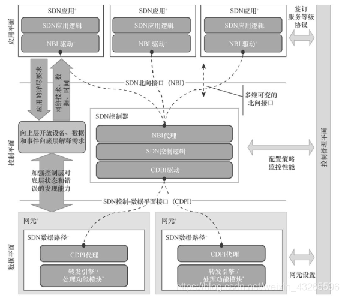

SDN
软件定义网络（Software Defined Network，SDN）是由美国斯坦福大学clean-slate课题研究组提出的一种新型网络创新架构，是网络虚拟化的一种实现方式。其核心技术OpenFlow通过将网络设备的控制面与数据面分离开来，从而实现了网络流量的灵活控制，使网络作为管道变得更加智能，为核心网络及应用的创新提供了良好的平台。
SDN提出控制层面的抽象，目前的MAC层和IP层能做到很好的抽象但是对于控制接口来说并没有作用，我们以处理高复杂度（因为有太多的复杂功能加 入到了体系结构当中，比如OSPF，BGP，组播，区分服务，流量工程，NAT，防火墙，MPLS，冗余层等等）的网络拓扑、协议、算法和控制来让网络工 作，我们完全可以对控制层进行简单、正确的抽象。SDN给网络设计规划与管理提供了极大的灵活性，我们可以选择集中式或是分布式的控制，对微量流（如校园 网的流）或是聚合流（如主干网的流）进行转发时的流表项匹配，可以选择虚拟实现或是物理实现。
SDN的基本架构
SDN采用了集中式的控制平面和分布式的转发平面，两个平面相互分离，控制平面利用控制—转发通信接口对转发平面上的网络设备进行集中式控制，并提供灵活的可编程能力，具备以上特点的网络架构都可以被认为是一种广义的SDN。
在SDN架构中，控制平面通过控制—转发通信接口对网络设备进行集中控制，这部分控制信令的流量发生在控制器与网络设备之间，独立于终端间通信产生的数据流量，网络设备通过接收控制信令生成转发表，并据此决定数据流量的处理，不再需要使用复杂的分布式网络协议来进行数据转发，如下图所示。
SDN 并不是某一种具体的网络协议，而是一种网络体系框架，这种框架中可以包含多种接口协议。如使用OpenFlow等南向接口协议实现SDN 控制器与 SDN 交换机的交互，使用北向 API实现业务应用与 SDN 控制器的交互。这样就使得基于SDN的网络架构更加系统化，具备更好的感知与管控能力，从而推动网络向新的方向发展。
ONF定义的SDN架构

ONF定义的架构共由四个平面组成，即数据平面、控制平面、应用平面以及右侧的控制管理平面。各平面之间使用不同的接口协议进行交互。
1. 数据平面
由若干王元组成，每个网元可以包含一个或多个SDN Datapath。每个SDN Datapath是一个逻辑上的网络设备，它没有控制能力，只是单纯用来转发和处理数据，它在逻辑上代表全部或部分的物理资源。一个SDN Datapath包含控制数据平面接口代理、转发引擎表和处理功能三部分。
2. 控制平面
即所谓的SDN控制器。SDN控制器是一个逻辑上集中的实体，它主要负责两个任务，一是将SDN应用层请求转换到SDN Datapath，二是为SDN应用提供底层网络的抽象模型（可以是状态、事件）。一个SDN控制器包含北向接口代理、SDN控制逻辑以及控制数据平面接口驱动三部分。SDN控制器只是要求逻辑上完整，因此它可以由多个控制器实例组成，也可以是层级式的控制器集群；从地理位置上讲，既可以是所有控制器实例在同一位置，也可以是多个实例分散在不同的位置。
3. 应用平面
由若干SDN应用组成，SDN应用时用户关注的应用程序。它可以通过北向接口与SDN控制器进行交互，即这些应用能够通过可编程方式把需要请求的网络行为提交给控制器。一个SDN应用可以包含多个北向接口驱动（使用多种不同的北向API），同时SDN应用也可以对本身的功能进行抽象、封装来对外提供北向代理接口，封装后的接口就形成了更为高级的北向接口。
4. 管理平面
负责一系列静态的工作，这些工作比较适合在应用、控制、数据平面外实现，比如对网元进行配置、指定SDN Datapath的控制器，同时负责定义SDN控制器以及SDN应用能控制的范围。
5. SDN控制数据平面接口（CDPI）
SDN CDPI是控制平面和数据平面之间的接口，它提供的主要功能包括：对所有的转发行为进行控制、设备性能查询、统计报告、事件通知。SDN一个很重要的价值就体现在CDPI的实现上，它应该是一个开放的、与厂商无关的接口。
6. SDN北向接口（NBI）
SDN NBI是应用平面和控制平面之间的一系列接口。它主要负责提供抽象的网络视图，并使应用能直接控制网络的行为，其中包含从不同层对网络及功能进行的抽象，这个接口也应该是一个开放的、与厂商无关的接口.
SDN的核心概念
SDN的核心思想就是要分离控制平面与数据平面，并使用集中式的控制器来完成对网络的可编程任务，控制器通过北向接口和南向接口协议分别与上层应用和下层转发设备实现交互。正是这种集中式控制和数据控制分离（解耦）的特点使SDN具有了强大的可编程能力，这种强大的可编程性使网络能够真正地被软件所定义，达到简化网络运维、灵活管理调度的目标，同时为了使SDN能够实现大规模的部署，就需要通过东西向接口协议支持多控制器间的协同。
SDN数控分离的优点
（1）全局集中控制和分布高速转发：这是SDN的最主要优势，一方面可以实现控制平面的全局优化；另一方面可以实现高性能的网络转发能力。
（2）灵活可编程与性能的平衡：SDN数控分离的设计更加平衡，以FIB为分界线实际上降低了SDN的编程灵活性，但是没有暴露商用设备的高速转发实现细节，因此也使得网络设备商更容易接受SDN的理念。
（3)开放性和IT化：数据控制分离在一定程度上可以降低网络设备和控制软件的成本。当前的网络设备是捆绑控制平面功能软件一起出售的，由于软件开发由网络设备公司完成，对用户不透明，因此网络设备及其控制平面软件的定价权完全掌握在少数公司手中，造成了总体价格高昂。在数据控制平面分离以后，尤其是使用开放的接口协议后，将会实现交换设备的制造与功能软件的开发相分离，这样可以实现模块的透明化，从而有效降低成本。
SDN数控分离面临的问题
（1）可扩展性问题：这是SDN面临的最大问题，数据控制分离后，原来分布式的控制平面集中化了，即随着网络规模扩大，单个控制节点的服务能力极有可能会成为网络性能的瓶颈（即单点故障）。
（2）一致性问题：在传统网络中，网络状态一致性是由分布式协议保证的，在SDN数据控制分离后，集中控制器需要负起这个责任，如何快速侦测到分布式网络节点的状态不一致性，并快速解决这类问题。
（3）可用性问题：可用性是指网络无故障的时间占总时间的比例，传统网络设备是高可用的，即发向控制平面的请求会实时得到响应，因此，网络比较稳定，但是在SDN数据控制分离后，控制平面网络的延迟可能会导致数据平面可用性问题。
抽象
（1）转发抽象是数据平面抽象成通用的转发模型，隐藏了底层的硬件实现，转发行为与硬件无关，如MAC表、MPLS标签表、路由表、ACL访问控制列表等抽象成统一的流表。
（2）分布状态抽象屏蔽分布式控制的实现细节，为上层应用提供全局网络视图。
（3）配置抽象是网络行为的表达通过网络编程语言实现，将抽象配置映射为物理配置。Overlay网络架构实现对基础网络设施的抽象。
SDN可编程
（1）SDN可编程通过为开发者们提供强大的编程接口，从而使网络有了很好的编程能力。对上层应用的开发者来说，SDN的编程接口主要体现在北向接口上，北向接口提供了一系列丰富的API，开发者可以在此基础上设计自己的应用而不必关心底层的硬件细节，就像目前在x86体系的计算机上编程一样，不用关心底层寄存器、驱动等具体的细节。SDN南向接口用于控制器和转发设备建立双向会话，通过不同的南向接口协议， SDN 控制器就可以兼容不同的硬件设备，同时可以在设备中实现上层应用的逻辑。SDN的东西向接口主要用于控制器集群内部控制器之间的通信，用于增强整个控制平面的可靠性和可拓展性。
（2）可编程能力体现在很多的层次上，从下往上依次为芯片可编程（如P4、POF）、FIB可编程（如OpenFlow）、RIB可编程（如BGP、PCEP）、设备OS可编程、设备配置可编程（如CLI、NETCONF/YANG、OVSDB）、控制器可编程和业务可编程（如GBP、NEMO）。